How to create an audio patch for the Mesen HDpack feature.
Story
Cubear kindly took the time to explain how to make a Mesen HD Pack patch on the Discord channel, and we’re happy to share his awesome work with everyone!
File:
Database match: Bio Miracle Bokutte Upa (Japan)
Database: No-Intro: Nintendo Entertainment System (v. 20210216-231042)
File SHA-1: E1C7D975E6964F9860B58D5D9530ED7E2A24B376
File CRC32: CC4C8E9C
ROM SHA-1: 31FC500B759EC8AB5B4C977625DC8B33C116470F
ROM CRC32: 6DC28B5A
Workflow
to make an audio patch you need to accomplish at least two distinct goals.
1 - find the audio play signal in code (and how a game differentiates between tracks),
2 - find a way to stop the game's native audio from playing without breaking the game,
pretty much you always gotta do 1 before two in this case, so let's find the audio play routine
unfortunately for us, this game's title screen doesn't play music (it's ideal if it does, because it makes this at least a little bit easier.)
so we'll enter the first level and make a song play
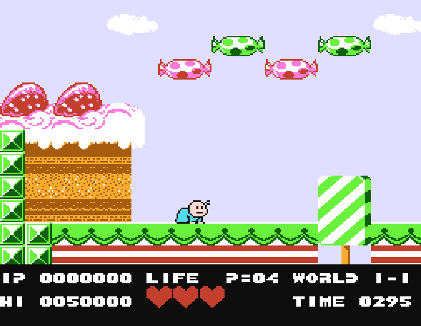
while the song is playing, i reset access stats in the memory viewer in PRG rom
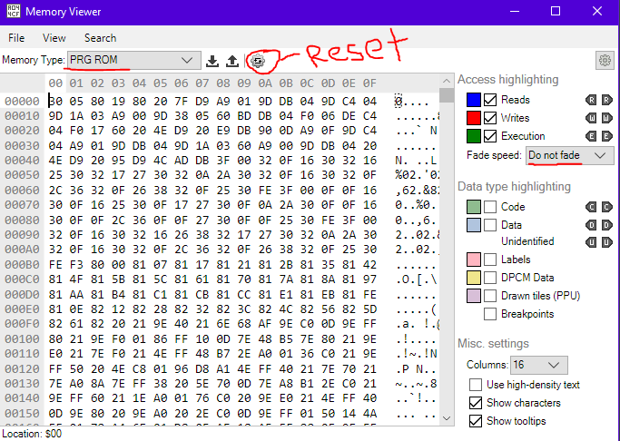
Note that i've set up the memory viewer to be for PRG rom and also the "do not fade" for fade speed.
though that one's jsut personal preference PRG rom is just the ROM image of the game.
now, because all the assets are loaded and nothing's happening in the game,
it's likely the only thing happening will be the music being loaded in order to play it
it can be a bit easier to find with "data" highlighting on as well,
but i scroll through until a big solid block of read song occurs (it'll only be solid if you listen through one loop of the song)
in this case, this is the first stage's song
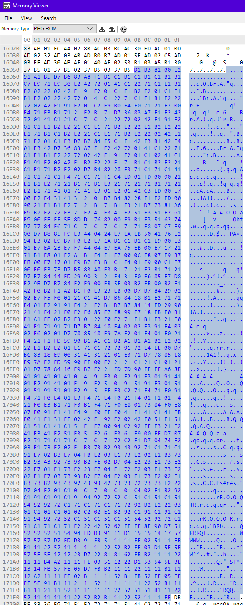
since you're probably not used to seeing this stuff,
there's one way to really get in and identify for sure that this is the music
if you click "reset access" while the song is playing, it'll fill in in multiple sections like this
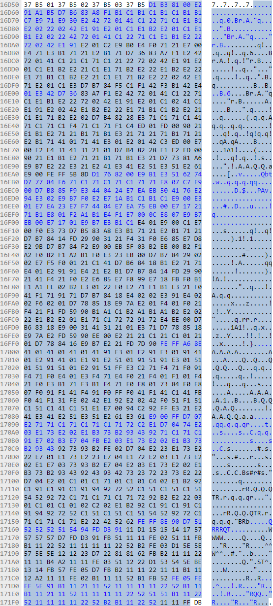
it's because the different parts of the song (for the different instruments the nes can play) are separated from each other,
and they all play at the same time, so this is what music looks like.
you can also watch one bar fill up while listening to the song and see that the highlighting only progresses on a note being played on one of the instruments etc
so now that we know where the song is, how do we get from there to the code of the game that tells the song to play?
i usually just select the first byte of the song and set a breakpoint on it
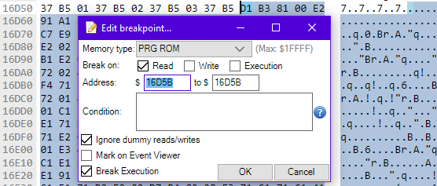
this breakpoint will stop the NES program at the point in code when this first byte is read
now we reset the game and start the song again
this is the part that will look extra intimidating (if it hasn't looked so already)
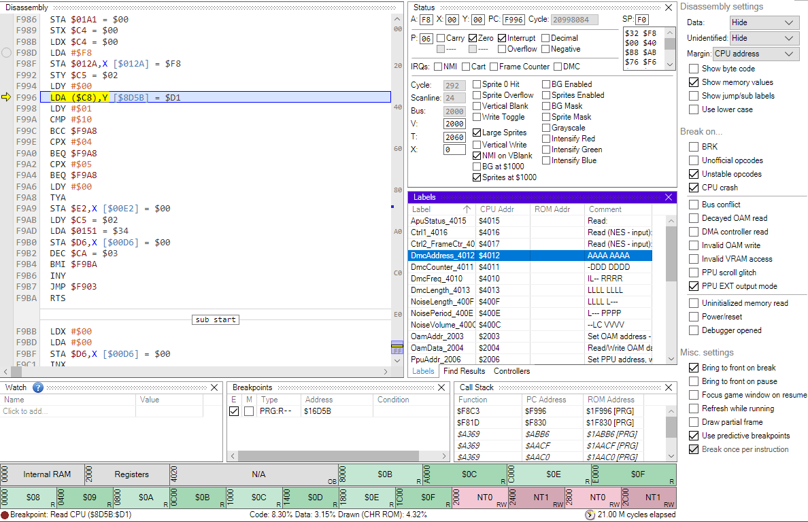
the program execution has stopped on the highlighted line
so this is the point where the game has started to read the song data lda (c8),y
which means load information from the pointer stored in $c8 in ram, modified by y
y is 0, which is great, it means we're absolutely on our first note of the song
so prior to this, we know that C8, C9, are going to be written with a pointer to this song
so you could set a breakpoint on c8 or c9 and then restart the game and come back in,
or you can look upwards in the code until you can see c8 or c9 being written.
i've opted for the latter, as a quick glance can save you some time.
here it is:
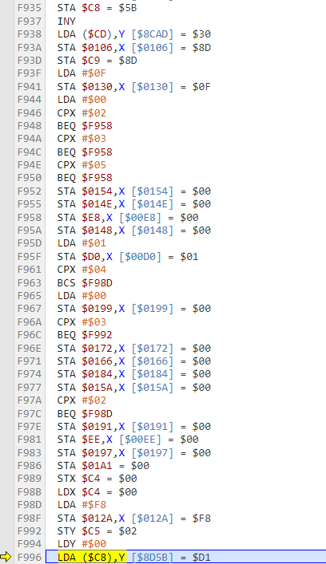
the top lines in this screenshot are c8 and c9 being written,
the lowest line here is where the first note of the song was read
and it's all in the same subroutine which means, absolutely, 100% we are in the right place.
now what i usually look for is a way to tell what number is being used to access the song
usually things are done by looking up an index number
and this index number will be used to set where C8 and C9 are written from (in this game)
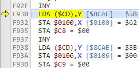
so the pointers here are coming from a pointer held in cd, ce
a little more "up" in the code here, we can see CD, CE being written
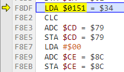
so the data in ram $0151 is being used to set the location of the pointer to the pointer of the current song
so now we're gonna look for where this is set. which is just "up" a little more
about this much more up
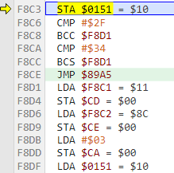
and if we change 34 (in A) right now, chances are we'll mess up the music real good.
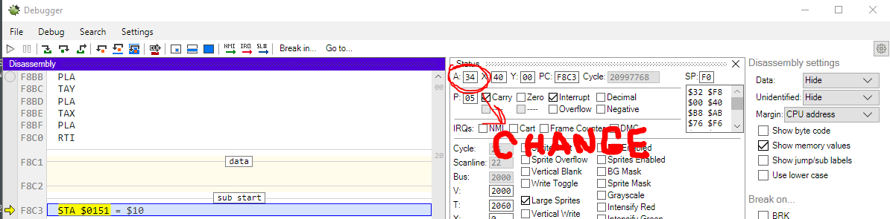
so i'll change it and hit play lol
now i could tell from looking at the code a bit that these were three byte pointers, so going from 34 to 37 makes a different song play. but don't expect to be at that point for a while lmao
usually you might expect two byte pointers
anyways, we're now most interested in where this 34 is coming from, which is actually outside of this subroutine
so we continue stepping backwards through the code (this button)
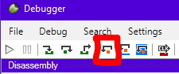
until we find where the value 34 is loaded into A
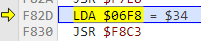
so ram 06F8
i'll breakpoint this ram and rerun the game to see when it gets written.
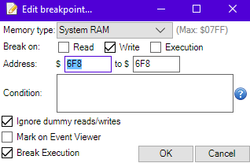
turns out it was just up from where i was at. oops
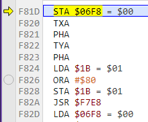
and now we run it back until we find the source of 34 in A again
basically we're going to repeat these steps until we hit a source for things
which also wasn't a long time ago, basically just past the beginning of this subroutine we see this
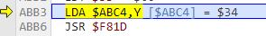
abc4 is a location in rom
lda abc4 loads from abc4 plus the value in y
the value in y right now is 0
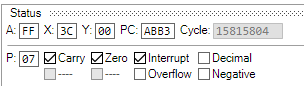
i'll change this Y value to 2 or 3 and see what happens.
same song plays. so we're not early enough
where does Y being 0 come from? let's trace it back to when it gets set
literally right above
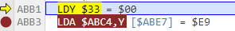
when does $33 become 0? let's see when that gets set
theres a couple false flags in here (ram clearing routines)
but then i see this
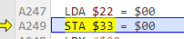
this looks right to me lol
oh well, this is a bit odd
changing the value in A (being loaded from 22, written to 33 from 0 to 3) has warped me to world 2-1
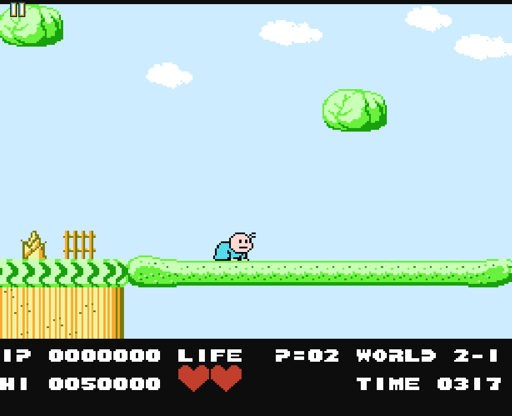
so perhaps now i'm hitting things a bit too early, for what level to load instead of what song to play for the level
still, we can use this to arbitrarily call up any level we like, including ones that play a different song, so it's a very useful find
so since we know the song loader happens here:
we can alternate between loading level 1-1 and level 1-2 and see how it changes
with a breakpoint on this instruction, and one where we can alter the level load
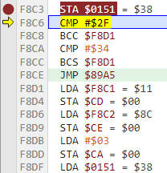
so we can see that this is actually a 4 byte pointer
since 34 -> 38 is 4 bytes
so what's happening is likely... it's using two bytes to point to level data, and two bytes to point to song data
this is a bit weird, i don't think i've seen a game that does this before
as i'm progressing a bit though i do see some things coming through...
this bit of code here...
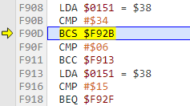
it's checking for if an incoming signal is a song ($34 or higher) or sfx
mesen's debugger is really helpful if you don't have a good grasp of ASM yet
you can mouseover instructions for tooltips that tell you what it's doing
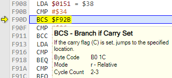
it's doing a poor job of telling you what this means or why the carry might be set, but it does give you at least the very basic idea of what it does
at this point my intuition is telling me some things
songs are going to be spaced 4 indexes apart
songs are going to start at 34 and count up
so 34 38 3C 40 44 48 4C 50 and so on
so now that we sort of have a rough idea of where the game knows that something is music is, and what the music calls look like, we can sort of consider goal #1 complete
turns out about half of what we just did was unnecessary, but it did lead to some useful info for testing so it really wasn't a waste of time
goal #2, how to make it not play the game's music
well, once it knows that something being requested is music, it does this here, which i thought was kinda suspect..
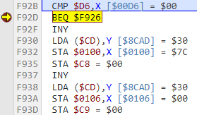
just before it sets the pointers for the song to play, it's checking something.... and if it matches, it's skipping setting the pointers, and maybe more.
this is probably something akin to "checking if this song is already playing, so we don't start the same song multiple times" type of check
so how do we test this?
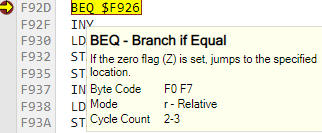
we can actually manually set the Z flag here:
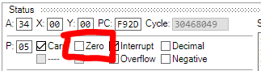
and.. the song doesn't start!
and the game doesn't crash!
and.. sound effects still work!
wow! exactly what we needed to know
so now we know
when we can get an accurate track number
how to make a song not play on NES hardware
so we can actually start writing our hooks and code etc
so there's some reading to be done for the next part, since it's program-y in nature
there's areas we have to write to with NES code, to make Mesen know to play the replacement music
they're documented here: https://www.mesen.ca/docs/hdpacks.html#replacing-audio-in-games
and i have a little written document on what it means to "hook" in a game and how to write it, what it looks like and does, etc
https://ff5central.com/spotlight/anatomy-of-a-hack/
it goes a bit into snes stuff, but since snes is just a superset of nes most things are still applicable
so i've decided where i'd like to hook, which is where it decides if it's going to play the song or not. right here
now we need to find somewhere to put our code, luckily enough theres a TON of freespace in the same block of ROM as our hook, which is 100% ideal (we are not always so lucky)
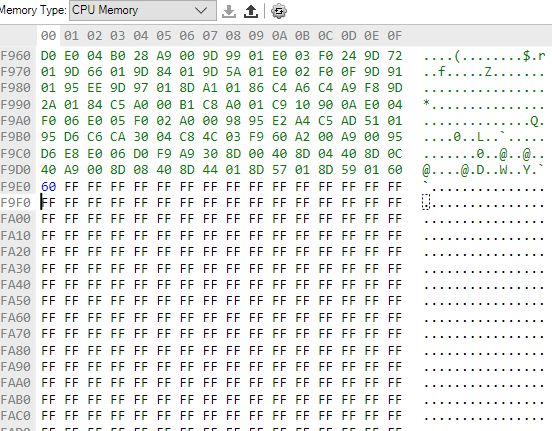
if you can't find any freespace at all, generally i will overwrite the music data with code, as we'll be using the code to replace the music anyways. this is a destructive change though and is less preferred than freespace like this.
anyways, this means we want to overwrite our hook in mesen with new code. mesen can do this internally, so let's do it
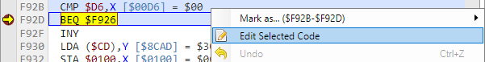
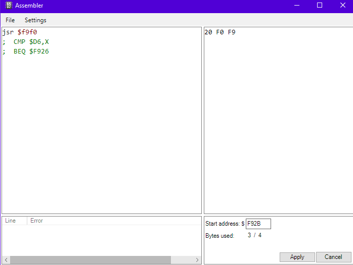
mesen will automatically put in enough NOP to make your hook work, but you can put it in manually if you're nervous
now it looks like so:
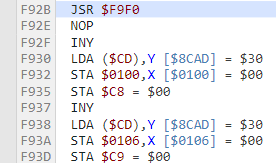
and we'll step forwards to take the jump
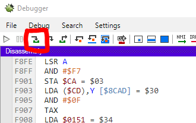
oh no its full of garbage! nah this is just what ff ff ff ff ff ... looks like
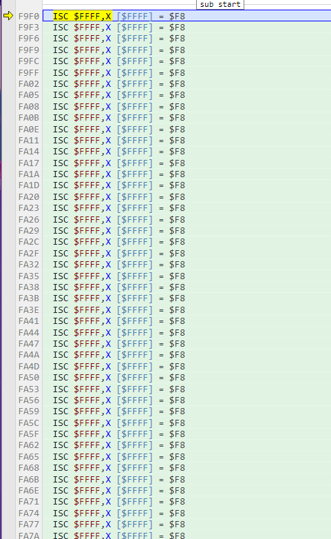
i just select the first one and edit the code, now we can write our NEA code
my NEA code for castlevania 2 is opensource, and is fairly robust. it can (mostly) just be dropped in with few modifications.
it's probably overkill for NEA since it's written from a very MSU-1 (snes) mindset
but it'll be fine.
cmp $d6,x ;start with the native code we replaced.
bne skip1
jmp $F926
skip1:
;now lets do NEA.
sta $4104 ;store track number as album number because it flows better.
pha
lda #$01
sta $4101 ;stop old music.
sta $4105 ;don't need a track number, so track 1 in each album is the song.
pla
;checking for noloops
cmp #$FF ; placeholder
beq noloop
cmp #$FF; placeholder
beq noloop
cmp #$FF ; placeholder
beq noloop
cmp #$FF; placeholder
beq noloop
lda #$01
bne yesloop
noloop:
lda #$00
yesloop:
sta $4100 ;set loop
lda #$00
sta $4101 ;start song play
lda $4100 ;checking error bit
cmp #$03 ;is bit 2 (error) set
bcc errorfound ;bcs is 4+up, values might be 4-7 depending.
lda #$ff
sta $4102 ;max volume
jmp $f926 ;exit routine, skip play
errorfound: ;if there's an error, this should avoid muting.
jmp $F92F ;exit routine, play normal NES music
the placeholders here are just so we can edit in up to 4 track numbers that shouldn't loop (like death or victory jingles, credit songs, title screen songs.. etc)
if we need more we'll just need to reinject the code instead. i find 4 is usually enough
i'll map out the track numbers and generate the stuff for your hires.txt.
this does seem to catch death/victory/boss music changes in-level,
so i think the only thing left to do in code is implement pausing and unpausing
scratch that, theres a fade out at the end of the credits
it might not really be super worth implementing, but it's possible lol
34: track 1 (1-1)
38: track 2 (1-2)
3C: track 3 (3-3)
40: track 4 (2-2)
44: track 5 bell (invulnerability)
48: track 6 boss
4C: track 7 endboss
50: track 8 chest appears
54: track 14 chest opened
56: track 9 fairy victory song
5a: track 10 fancy fairy victory song (unused?)
5e: track 11 died (hit by random enemy)
62: track 12 game over
66: track 13 (ending)
8a: track 11 died (fell?)
https://www.zophar.net/music/nintendo-nes-nsf/bio-miracle-bokutte-upa track numbers from here
it's a shame this comes after the "music player" features
because it's a lot easier to deal with most of the time
so usually when possible i like to rely upon the in game systems,
but occasionally those systems will break when the NES itself is no longer playing music,
leading you to sometimes develop independently (from the game's internal audio system)
so the game needs to keep track in ram of if the game is paused or not,
to prevent player movement, enemy movement, the timer countdowns, and so on
you can actually find it by looking at system ram and just repeatedly pausing and unpausing
and seeing if things move between a couple different values.
it'll usually be fairly early in ram since it's so important, it's a feature that gets developed early
in this game, paused status is on $0024 in system ram, it alternates between 0 (unpaused) and 1 (paused),
but i've seen it be other values in different games, notably FF and 00 are worth looking at as well.
you can check your guesses by freezing the value in emulator
and seeing if the pause system still works, in this case,
i froze the value at 1 and am unable to unpause the game
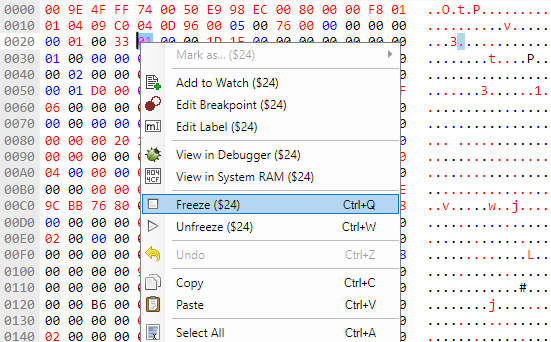
manually setting the value to 0 unpauses the game without any input on the controller.
suspicion confirmed, anyways, we can put our pause and unpause code right where this gets set and cleared
so unfreeze, breakpoint, pause... here's the bit of code that deals with pausing and unpausing the game
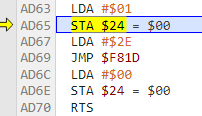
You can see it setting the pause by loading 01 and writing it to 24 then it loads 2e and jumps somewhere else.
this is likely a jump to the sound routine to play the pause sound just below that,
you can see it loading 00 and writing it to 24 to unpause, pretty convenient
so we can do this with two hooks. we'll replace
lda #$01
sta $24
with one hook, and the same for lda #$00
since we can guess that the sound routine is loaded here,
we can actually use the space after our existing code to hold the pausing and unpausing code.
here's our music playing code. lots of space after this, especially since pausing and unpausing is real real easy
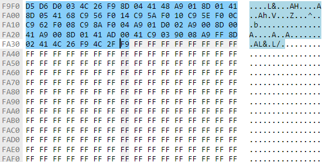
so in the mesen documentation, we can see this register here controls playback, including start, stop, pause
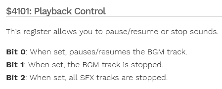
bit 0 is short for the least significant bit of a byte. a byte is 8 bits.
the white square is bit 0.
if we translate this into numbers it looks like %00000001
if we write this into hex or decimal, it becomes 1
so we learned that when we send $01 to $4101, we will pause playback
so our hook for pausing will look like
jsr do_pause
nop
and then the code will be
LDA #$01
STA $24
sta $4101
rts
the hook to unpause looks basically the same, the code to unpause will look like
LDA #$00
STA $24
sta $4101
rts
pretty simple stuff, works like a charm. no notes.
Fade out Feature
this happens at the konami logo in the credits. (and at no other point in the game that i can see)
with some RAM watching i can see the area that controls the music, so watching what nearby addresses change when the konami logo pops up gave me some clues
the areas in red here are the audio controls.. i mostly identified them by watching them as the music played, they sync up.
hard to really explain what i mean aside from that the values change in time with the various instruments in the music
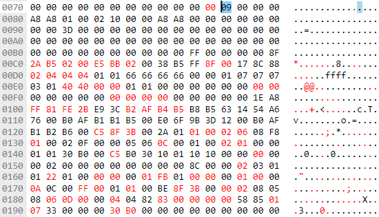
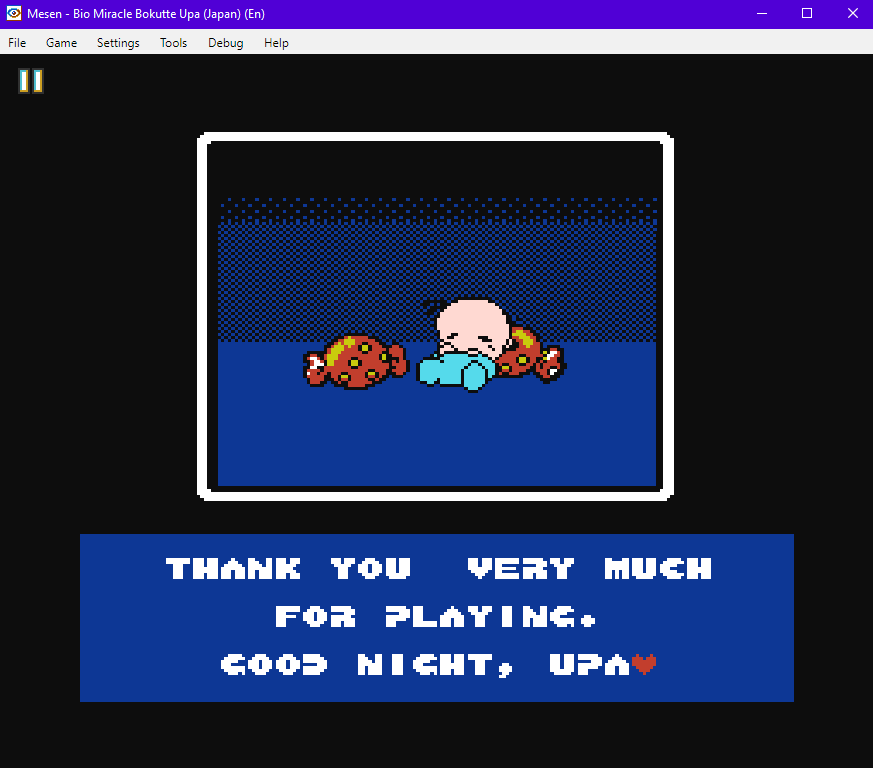
when we advance a screen..
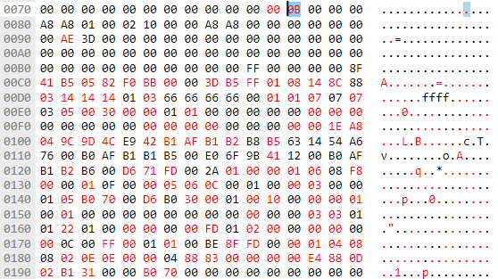
We can see some newly accessed ram bytes. i was curious about the ones near the top of this image, and with a little bit of investigating,
the highlighted one is a sort of "cutscene" control. which part of a cutscene is being played and at $0091
theres a timer that ticks down from FF to 00 during this screen, likely just a timer for how long the screen goes on for.
it's currently $AE now, this is actually pretty perfect! mostly.
if we want to fade the song, we need to count down from FF to 00 anyways.
we could just write this timer's value to our audio volume register
if we can tie this to a ram value that only happens during this screen, we're golden
so right now i'm playing through the game (with cheats) and making sure the cutscene value doesnt reach $0B at any other point.
it'd be nice if we could use this to trigger our fade as well, just very convenient all around
if it turns out to be a good signal, we can literally write this as our fade code
lda $7C ;(cutscene progress number)
cmp #$0B
bne nofade ;branch not equal, so NOT 0B, don't fade
lda $91 ;(screen timer, FF to 00)
sta $4102 ;BGM volume
nofade:
rts
and we can just run this code every frame of the game if we want, it's light enough that it shouldnt seriously impact anything
all video games really are is getting the right information to the right place at the right time
so what we're checking for is the right time (during music fade), to get the right information (how much time to the end of the fade), and put it into the right place (music volume)
it's nice that it counts down instead of up. lol
unfortunately since i mostly used intuition here instead of a process others could follow, this is a pretty bad lesson overall lol
the highest value out of the cutscene progress i've seen so far is 08, which happens during the transition from x-3 to x-1 (ie: world clear) so chances are that this is going to be a good value
Start Menu Audio Feature
developing a track start when none exists in a game:
we're going to allow for a title screen song in this game, which currently is silent.
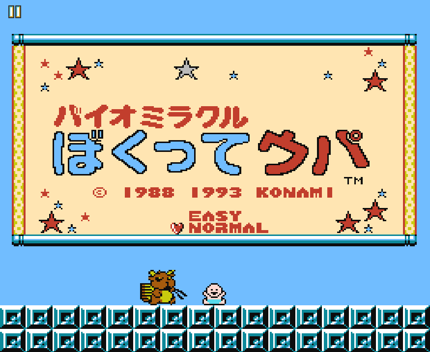
see? can't hear anything. Okay, so for this, we'll need to isolate a moment in time where we can tell what screen this is,
and HOPEFULLY a moment in time in code that is only called when this screen first appears so in this case,
i'll breakpoint where the tilemap is written, since most title screens will have unique tilemaps
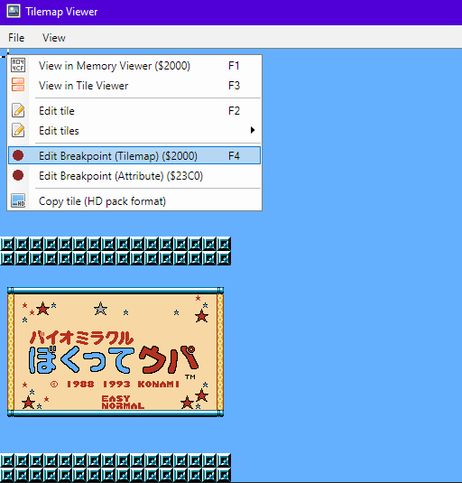
you could also breakpoint when the tile graphics are loaded into vram, since most title screens will also have unique tiles etc
(though this only works in CHR-RAM games so tilemap is more universal). so this game is breaking right here:
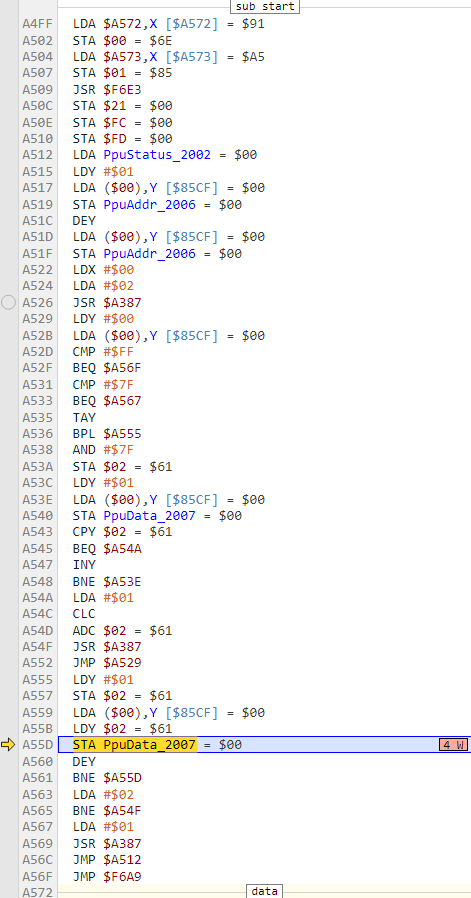
store into ppu data blah blah. this routine here is likely used many many times over the course of the game
so we need to go back to slightly before it's called, to where "which tilemap" is being set
so in this instance i would breakpoint at $A4FF, rewind by a frame, then go forwards again
since its at the start of this subroutine, chances are it'll break
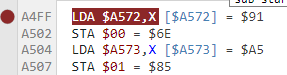
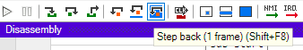
and it breaks! great
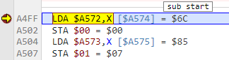
this little bit of code looks like it's loading a pointer into $00 and $01 to use to transfer a tilemap...
modified by X, so when X is set to the current value would be where i'm interested in hooking here
X is currently $02
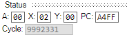
so i'm going to step backwards and figure out when X becomes 02
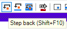
wouldn't you know it, it's literally right before entering this subroutine
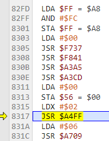
since it's a hardcoded 02 as well, this code is LIKELY unique to loading the title screen. this is a perfect find.
here i think i'll hook on top of sta $56, ldx #$02
We'll just write our own hardcoded NEA code, since its jsut for one track it doesnt need to be flexible.
lda #$01
sta $4100 ;looping on
sta $4101 ;pause
sta $4104 ;album
lda #$FF
sta $4105 ;track
sta $4102 ;volume
lda #$00
sta $4101 ;unpause
rts